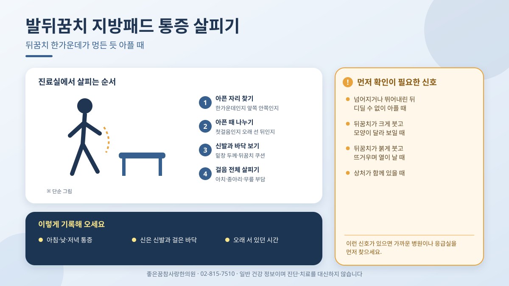

이종호 한의사 감수좋은꿈참사랑한의원 대표원장 (한의사 면허번호 19769)발행 2026-11-26 · 수정 2026-11-26
이 글의 차례
딱딱한 마루 위를 맨발로 걸을 때마다 뒤꿈치 한가운데가 쿵쿵 울립니다. 마치 작은 돌멩이를 밟은 것처럼, 혹은 멍든 자리를 누르는 것처럼 아픕니다. 그런데 푹신한 운동화를 신으면 한결 낫고, 아침 첫걸음보다는 오래 서 있을수록 더 아픈 것 같습니다.
진료실에서 발뒤꿈치 통증을 말씀하시는 분들은 대부분 족저근막염을 먼저 떠올리십니다. 실제로 족저근막염은 흔한 발뒤꿈치 통증입니다. 하지만 아픈 자리와 아픈 때를 자세히 여쭤 보면, 족저근막이 아니라 뒤꿈치 아래 지방패드가 지친 경우가 섞여 있습니다.
두 가지는 이름도 비슷하고 아픈 곳도 가깝지만, 아픈 자리와 시간대, 편해지는 조건이 조금씩 다릅니다. 그 차이를 알면 신발과 바닥, 걷는 습관에서 무엇부터 바꿔야 할지가 훨씬 분명해집니다.
이 글에서는 지방패드가 무엇인지, 왜 아파지는지, 족저근막염과 어떻게 다른지, 그리고 일상과 한의원에서 무엇을 함께 살필 수 있는지를 차근차근 정리해 보겠습니다.
발뒤꿈치 지방패드는 무엇인가요
발뒤꿈치 뼈 아래에는 두툼한 지방 조직이 있습니다. 이 지방은 작은 방들이 벌집처럼 나뉜 구조 속에 들어 있어서, 걸을 때마다 몸무게를 받아 눌렸다가 다시 부풀어 오르며 충격을 흡수합니다. 자동차의 완충 장치나 운동화의 쿠션과 비슷한 역할입니다.
우리는 걸을 때 발뒤꿈치부터 땅에 닿습니다. 그래서 하루 수천 걸음 동안 뒤꿈치는 체중의 몇 배에 달하는 충격을 반복해서 받습니다. 지방패드가 두툼하고 탄력 있을 때는 이 충격을 잘 나누어 받지만, 얇아지거나 옆으로 퍼지면 뼈 가까이까지 충격이 전해집니다.
손으로 발뒤꿈치를 눌러 보면 말랑하게 들어갔다가 다시 차오르는 느낌이 있습니다. 이 쿠션이 예전보다 얇고 딱딱하게 느껴지거나, 누를 때 뼈가 바로 닿는 느낌이 든다면 지방패드가 지쳐 있을 가능성을 생각해 볼 수 있습니다.
왜 지방패드가 지치고 아파질까요
나이가 들면서 지방패드의 탄력과 두께가 조금씩 줄어드는 것이 가장 흔한 이유입니다. 벌집 같은 칸막이가 느슨해지면 지방이 옆으로 퍼지고, 뒤꿈치 한가운데의 쿠션이 얇아집니다. 마른 체형이거나 오랫동안 많이 걷고 뛰어 온 분에게서 조금 더 일찍 나타나기도 합니다. 그래서 같은 거리를 걸어도 예전보다 뒤꿈치가 쉽게 아파집니다.
딱딱한 바닥에서 오래 서 있거나 걷는 생활도 영향을 줍니다. 마루나 타일 바닥의 집에서 맨발이나 얇은 실내화로 지내는 분, 하루 종일 콘크리트 바닥에서 서서 일하시는 분, 밑창이 얇은 구두나 납작한 신발을 즐겨 신는 분에게서 자주 봅니다.
갑자기 걷는 양을 늘리거나, 계단과 내리막을 많이 오르내리거나, 뒤꿈치로 쿵쿵 딛는 걸음 습관이 있어도 지방패드가 반복해서 눌립니다. 체중이 늘어난 시기, 높은 곳에서 뛰어내리며 뒤꿈치로 착지한 뒤 아파지는 경우도 있습니다.
족저근막염과는 어떻게 다른가요
족저근막염은 발뒤꿈치에서 발가락 쪽으로 뻗은 두꺼운 막이 뒤꿈치 뼈에 붙는 자리가 아픈 것입니다. 그래서 아픈 곳이 뒤꿈치 한가운데보다는 조금 앞쪽, 안쪽인 경우가 많습니다. 지방패드 통증은 뒤꿈치 한가운데, 체중이 가장 많이 실리는 바닥 자리가 아픈 편입니다.
아픈 시간대도 다릅니다. 족저근막염은 아침에 일어나 첫발을 디딜 때, 오래 앉아 있다 일어설 때 가장 아프고 몇 걸음 걷고 나면 조금 풀리는 경우가 많습니다. 지방패드 통증은 오래 서 있거나 걸을수록 점점 더 아파지는 편이고, 딱딱한 바닥에서 특히 심해집니다.
발가락을 위로 젖혀 발바닥을 당겼을 때 뒤꿈치 앞쪽이 아프면 족저근막 쪽을, 뒤꿈치 한가운데를 엄지로 눌렀을 때 멍든 듯 아프면 지방패드 쪽을 먼저 떠올려 볼 수 있습니다. 다만 두 가지가 함께 있는 경우도 적지 않아서, 진료 때 직접 눌러 보고 걸음을 보며 구분합니다.
다른 뒤꿈치 통증과 헷갈리는 경우
뒤꿈치 뒤쪽, 신발 뒤축이 닿는 자리가 아프다면 아킬레스건이 붙는 자리의 문제일 수 있습니다. 뒤꿈치 옆을 양쪽에서 쥐었을 때 아프고 걸을수록 심해진다면 뒤꿈치 뼈의 피로 골절을 확인해 보아야 하는 경우도 있습니다.
안쪽 복사뼈 아래가 저리고 발바닥이 화끈거린다면 발목 터널을 지나는 신경이 눌리는 경우를 생각합니다. 허리에서 내려오는 저림이 뒤꿈치까지 오는 경우도 있습니다. 그래서 뒤꿈치가 아프다고 해서 모두 같은 원인으로 보지 않고, 아픈 자리와 저림 여부를 함께 여쭙습니다.
오래 서서 일하는 분들의 뒤꿈치
매장, 주방, 공장, 병원처럼 하루 대부분을 서서 일하시는 분들은 뒤꿈치가 쉬는 시간이 거의 없습니다. 특히 바닥이 콘크리트나 타일이면 몇 시간만 지나도 뒤꿈치가 화끈거리고, 퇴근길에는 걸음이 절룩거린다는 말씀을 자주 듣습니다.
이런 분들께는 일하는 자리의 바닥부터 여쭙니다. 서 있는 자리에 피로 방지 매트를 깔 수 있는지, 작업화 안에 쿠션 깔창을 넣을 수 있는지, 잠깐씩 앉을 수 있는 의자가 있는지를 함께 살펴봅니다. 근무 환경을 모두 바꾸기는 어렵지만, 한두 가지만 바뀌어도 하루 끝의 통증이 달라지는 경우가 많습니다.
쉬는 시간에는 앉아서 발목을 돌리고, 발가락을 오므렸다 펴며 발을 풀어 주세요. 퇴근 뒤에는 미지근한 물에 발을 담그고 다리를 조금 올려 쉬면 하루 동안 쌓인 뒤꿈치의 피로를 덜어 주는 데 도움이 됩니다.
어르신의 뒤꿈치 통증은 무엇을 더 볼까요
어르신은 지방패드가 얇아진 데다 다리 근육이 줄어 걸음이 무거워지면서 뒤꿈치로 쿵 딛는 걸음이 되기 쉽습니다. 뒤꿈치가 아파 걷기를 줄이면 다리 힘이 더 빠지는 흐름으로 이어질 수 있어서, 충격을 줄이면서도 걷기는 이어 가실 방법을 함께 찾습니다.
양말과 신발도 함께 봅니다. 너무 얇은 양말보다 뒤꿈치 쪽이 도톰한 양말이 편하고, 발등을 끈이나 벨크로로 조여 뒤꿈치가 신발 안에서 헐겁게 움직이지 않게 하는 것이 좋습니다. 미끄럼 방지 밑창이 있으면 넘어짐도 함께 줄일 수 있습니다.
지방패드 통증에서 자주 헷갈리는 것
첫째, 뒤꿈치가 아프면 스트레칭부터 해야 한다는 생각입니다. 종아리와 발바닥 스트레칭은 족저근막염에 자주 권하지만, 지방패드 통증에서는 스트레칭보다 뒤꿈치에 실리는 충격을 줄이는 것이 먼저인 경우가 많습니다. 원인에 따라 순서가 달라집니다.
둘째, 딱딱한 신발이 발을 잘 받쳐 준다는 생각입니다. 아치를 받쳐 주는 것은 중요하지만, 뒤꿈치 아래가 딱딱하면 지쳐 있는 지방패드에 충격이 그대로 전해집니다. 뒤꿈치 부분이 적당히 두툼하고 감싸 주는 신발이 더 편한 경우가 많습니다.
셋째, 집에서는 맨발이 가장 좋다는 생각입니다. 바닥이 푹신하다면 괜찮지만, 마루나 타일 바닥에서 하루 종일 맨발로 지내면 뒤꿈치가 쉬는 시간이 없습니다. 지방패드 통증이 있을 때는 집 안에서도 쿠션 있는 실내화를 신어 보시길 권합니다.
먼저 이렇게 여쭙니다
처음 오시면 저는 대략 이런 순서로 여쭙니다. 미리 생각해 오시면 이야기가 훨씬 수월해집니다.
- 뒤꿈치의 어느 자리가 아프신가요? 한가운데인가요, 앞쪽 안쪽인가요?
- 아침 첫걸음이 가장 아프신가요, 오래 서 있을수록 아프신가요?
- 맨발과 운동화, 딱딱한 바닥과 푹신한 바닥에서 차이가 있나요?
- 하루에 서 있거나 걷는 시간은 어느 정도인가요?
- 최근에 걷는 양, 운동, 체중, 신발이 바뀐 일이 있나요?
- 발바닥 저림이나 화끈거림, 허리 통증이 함께 있나요?
- 당뇨, 류머티즘처럼 함께 관리하는 질환이나 드시는 약이 있나요?
정확히 말씀하지 못하셔도 괜찮습니다. 자주 신는 신발을 신고 오시거나 사진을 찍어 오시면, 밑창이 닳은 모양만으로도 걸음 습관에 대해 많은 것을 알 수 있습니다.
일상에서 먼저 해 볼 수 있는 것
지방패드 통증은 뒤꿈치에 실리는 충격을 줄여 주는 것이 출발점입니다. 하루에 쌓이는 충격의 양을 줄이고, 한 번에 받는 충격의 크기를 줄이는 두 가지를 함께 생각해 보세요.
- 집 안에서도 뒤꿈치에 쿠션이 있는 실내화 신기
- 밑창이 얇은 신발 대신 뒤꿈치가 두툼하고 뒤축이 단단히 감싸는 신발 고르기
- 뒤꿈치 컵 모양 깔창으로 퍼진 지방패드를 모아 주기
- 오래 서 있는 일이라면 중간중간 앉아서 발을 쉬게 하기
- 뒤꿈치로 쿵쿵 딛지 말고 발 전체로 부드럽게 딛는 연습하기
- 계단과 내리막은 천천히, 난간을 잡고 걷기
뒤꿈치 컵 깔창은 뒤꿈치를 둥글게 감싸서 옆으로 퍼진 지방을 가운데로 모아 주는 역할을 합니다. 너무 딱딱한 것보다 적당히 말랑한 재질이 편한 경우가 많고, 양쪽 모두 넣어 걸음의 높이를 맞춰 주시는 것이 좋습니다.
운동을 쉬기 어려운 분이라면 걷기와 달리기 대신 자전거나 수영처럼 뒤꿈치에 충격이 덜 가는 운동으로 잠시 바꿔 보세요. 아픈 동안 체력을 지키면서 뒤꿈치가 쉴 시간을 줄 수 있습니다.
체중이 최근에 늘었다면 그 부분도 함께 살펴보시면 좋습니다. 걸을 때 뒤꿈치가 받는 충격은 체중에 비례해서 커지기 때문에, 조금만 줄여도 뒤꿈치가 느끼는 부담이 달라질 수 있습니다.
한의원에서 함께 살필 수 있는 경우
- 딱딱한 바닥에서 오래 서 있으면 뒤꿈치 한가운데가 멍든 것처럼 아픈 경우
- 뒤꿈치 통증 때문에 걸음이 바뀌어 무릎, 허리, 종아리가 뻐근한 경우
- 족저근막염과 지방패드 통증이 함께 있는 것 같은 경우
- 종아리와 발바닥이 단단하게 뭉쳐 발이 무거운 경우
- 오래 서서 일하는 직업이라 신발과 작업 환경 조정이 필요한 경우
좋은꿈참사랑한의원에 오시면 먼저 아래 '먼저 확인이 필요한' 신호가 없는지부터 봅니다. 그다음 맥을 짚고, 뒤꿈치를 직접 눌러 아픈 자리를 찾으며, 서 있는 자세와 걸음, 발 아치와 종아리의 긴장을 함께 살핍니다.
진찰한 내용을 바탕으로 종아리와 발 주변의 긴장을 푸는 침, 온열 관리, 신발과 깔창, 걷는 습관 안내 가운데 지금 상태에 맞는 것을 정합니다. 족저근막 쪽 통증이 함께 있다면 체외충격파 상담을 함께 할 수 있으며, 이는 진찰 뒤 필요하다고 판단될 때 정합니다.
당뇨가 있어 발 감각이 둔하신 분, 류머티즘처럼 관절 질환을 함께 관리하시는 분은 해당 병원의 진료를 그대로 이어 가시면서 오시면 됩니다. 처방받은 약은 상의 없이 멈추지 않으시고, 드시는 약은 진료 때 모두 알려 주세요.
이렇게 기록해 오시면 상담이 쉬워집니다
뒤꿈치 통증은 "언제, 어디서, 어떤 신발로" 아팠는지가 가장 중요한 단서입니다. 1~2주만 간단히 적어 보세요.
- 아침 첫걸음, 낮, 저녁의 통증 정도
- 그날 오래 서 있거나 걸은 시간
- 신은 신발과 주로 걸은 바닥(마루, 타일, 아스팔트 등)
- 깔창이나 실내화를 바꾼 날과 그 뒤의 변화
- 무릎, 허리, 종아리처럼 함께 불편한 곳
기록을 보면 어떤 신발과 바닥에서 뒤꿈치가 편했는지가 드러납니다. 그 조건을 하나씩 늘려 가는 것이 지방패드에 쉬는 시간을 주는 가장 현실적인 방법입니다.
뒤꿈치에게 쿠션을 돌려주는 일
지방패드는 평생 우리 몸무게를 받아 온 쿠션입니다. 그 쿠션이 조금 지쳤다면, 바깥에서 쿠션을 더해 주고 충격을 나눠 주는 것이 가장 먼저 할 일입니다. 신발 한 켤레, 실내화 한 켤레를 바꾸는 작은 일이 생각보다 큰 차이를 만들기도 합니다. 뒤꿈치가 보내는 신호에 귀를 기울이는 것부터 시작해 보세요.
오늘은 집 안에서 쿠션 있는 실내화를 신어 보시고, 저녁에 뒤꿈치가 어땠는지 한 줄 적어 보세요. 다음에 오시면 그 기록과 신발을 함께 보며 이야기를 이어 가겠습니다.
이런 증상은 먼저 확인이 필요합니다
- 넘어지거나 높은 곳에서 뛰어내린 뒤 뒤꿈치를 디딜 수 없을 만큼 아프고 붓는 경우
- 뒤꿈치가 붉게 붓고 뜨거우며 열이 나거나 상처가 함께 있는 경우
이런 신호가 있으면 한의원보다 가까운 병원이나 응급실을 먼저 찾으세요.
함께 읽으면 좋은 글
- 발바닥 통증은 어떤 종류가 있고 어떻게 구분해서 살피나요?
- 족저근막염 통증에 체외충격파는 어떻게 사용하나요?
- 아침 첫발이 아픈 발바닥 통증은 초음파로 어떻게 확인하나요?
- 평발이거나 발 아치가 무너져 발바닥 안쪽이 아플 때는 무엇을 살피고 어떻게 관리하나요?
- 발뒤꿈치 위 아킬레스건이 아침마다 뻣뻣하고 아플 때 체외충격파는 어떻게 살피나요?

여쭙는 것
- 뒤꿈치의 어느 자리가 아프신가요? 한가운데인가요, 앞쪽 안쪽인가요?
- 아침 첫걸음이 가장 아프신가요, 오래 서 있을수록 아프신가요?
- 맨발과 운동화, 딱딱한 바닥과 푹신한 바닥에서 차이가 있나요?
생활에서 해 볼 것
- 집 안에서도 뒤꿈치에 쿠션이 있는 실내화 신기
- 밑창이 얇은 신발 대신 뒤꿈치가 두툼하고 뒤축이 단단히 감싸는 신발 고르기
- 뒤꿈치 컵 모양 깔창으로 퍼진 지방패드를 모아 주기
한의원에서 함께 살필 것
- 딱딱한 바닥에서 오래 서 있으면 뒤꿈치 한가운데가 멍든 것처럼 아픈 경우
- 뒤꿈치 통증 때문에 걸음이 바뀌어 무릎, 허리, 종아리가 뻐근한 경우
- 족저근막염과 지방패드 통증이 함께 있는 것 같은 경우
먼저 확인이 필요한 신호
- 넘어지거나 높은 곳에서 뛰어내린 뒤 뒤꿈치를 디딜 수 없을 만큼 아프고 붓는 경우
- 뒤꿈치가 붉게 붓고 뜨거우며 열이 나거나 상처가 함께 있는 경우
한눈에 보는 표
| 구분 | 핵심 |
|---|---|
| 여쭙는 것 | 뒤꿈치의 어느 자리가 아프신가요? 한가운데인가요, 앞쪽 안쪽인가요? 아침 첫걸음이 가장 아프신가요, 오래 서 있을수록 아프신가요? |
| 생활에서 해 볼 것 | 집 안에서도 뒤꿈치에 쿠션이 있는 실내화 신기 밑창이 얇은 신발 대신 뒤꿈치가 두툼하고 뒤축이 단단히 감싸는 신발 고르기 |
| 한의원에서 함께 살필 것 | 딱딱한 바닥에서 오래 서 있으면 뒤꿈치 한가운데가 멍든 것처럼 아픈 경우 뒤꿈치 통증 때문에 걸음이 바뀌어 무릎, 허리, 종아리가 뻐근한 경우 |
| 먼저 확인이 필요한 신호 | 넘어지거나 높은 곳에서 뛰어내린 뒤 뒤꿈치를 디딜 수 없을 만큼 아프고 붓는 경우 뒤꿈치가 붉게 붓고 뜨거우며 열이 나거나 상처가 함께 있는 경우 |
자주 묻는 질문
지방패드 통증과 족저근막염은 어떻게 구분하나요?
지방패드 통증은 뒤꿈치 한가운데가 멍든 듯 아프고 오래 서 있을수록 심해지는 편이며, 족저근막염은 뒤꿈치 앞쪽 안쪽이 아침 첫걸음에 아픈 경우가 많습니다. 두 가지가 함께 있기도 해서 진찰로 확인합니다.
뒤꿈치 컵 깔창은 도움이 되나요?
옆으로 퍼진 지방을 가운데로 모아 충격을 나누는 데 도움이 될 수 있습니다. 너무 딱딱하지 않은 재질을 고르시고, 양쪽 모두 넣어 걸음 높이를 맞추시길 권합니다.
지방패드는 다시 두꺼워지나요?
나이에 따라 얇아진 쿠션을 되돌리기는 어렵지만, 충격을 줄이는 신발과 생활 조정으로 뒤꿈치가 쉬는 시간을 늘리면 통증이 덜해지는 경우가 많습니다.
집에서 맨발로 지내면 안 되나요?
바닥이 딱딱하다면 뒤꿈치가 쉴 틈이 없어 통증이 오래갈 수 있습니다. 아픈 동안에는 쿠션 있는 실내화를 신어 보시길 권합니다.
운동은 쉬어야 하나요?
뒤꿈치에 충격이 큰 달리기와 점프는 잠시 줄이고, 자전거나 수영처럼 충격이 적은 운동으로 바꾸어 체력을 이어 가시는 방법이 있습니다.
좋은꿈참사랑한의원은 재진 때 지난번 이야기부터 이어서 여쭙니다. 진료시간과 예약은 오시는 길에서 확인하세요.
어디서 상담받을 수 있나요?
좋은꿈참사랑한의원은 서울 동작구 만양로2길 2 신성빌딩 3층·5층(서울 동작구 상도동, 7호선 상도역 3번 출구 근처)에 있습니다. 한의사 3명(이종호 대표원장, 조영기 수석진료원장, 정원영 진료원장)이 진료합니다. 진료시간은 평일 09:30~20:00(점심 13:00~14:00), 토·일·공휴일 09:30~15:00이며, 방문 전 전화로 확인을 권합니다. 예약은 네이버 예약, 카카오톡 상담, 전화 02-815-7510로 받습니다.
이 글은 일반적인 건강 정보이며 개인의 진단이나 치료를 대신하지 않습니다. 증상이 있거나 복용 중인 약이 있다면 진료를 통해 확인하세요. 치료 효과는 개인마다 다를 수 있습니다.
작성 기준: 일반적으로 알려져 있는 건강 정보를 참고해 정리했습니다(대표원장 감수). 증상 기록은 1~2주 동안 하루 1회, 비슷한 시간에 적어 오시면 지난 상태와 비교하기 쉽습니다.